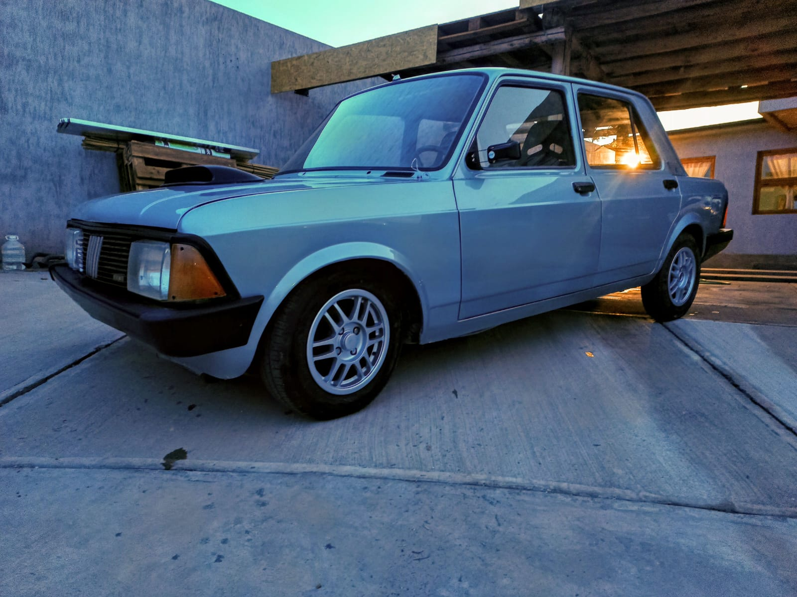

Somos una empresa familiar con más de 10 años de experiencia en el mercado de los vehículos clásicos. Nos especializamos en la venta de autos y motos de los años 90 y 00, una época que marcó un hito en la historia de los autos y las motos.Todos nuestros vehículos son cuidadosamente seleccionados y restaurados para ofrecerte la mejor calidad posible.En W&Wmotors nos apasionan los vehículos clásicos. Nos gusta compartir nuestra pasión con nuestros clientes y ayudarlos a encontrar el vehículo perfecto para ellos.

Fiat 128 super europa, 1/4 de milla categoria 3 Galvez